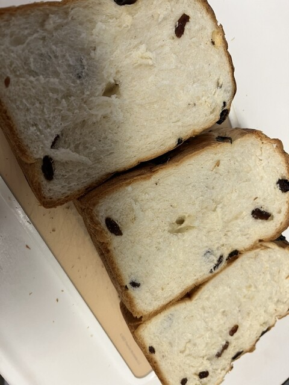

昭和初期から沼津で続く老舗ベーカリー。県内最古級のレンガ窯で焼き上げる名物イギリス食パンを、今も変わらぬ製法で。
県内最古級の伊豆石の窯。遠赤外線でふっくらと焼き上げます。
窯で焼く、ふんわり山型の食パン。長年の看板商品。
昭和初期から変わらぬ製法で、素朴なパンを。

世界遺産・韮山反射炉をオマージュして先代が作ったというレンガ窯。そこで焼き上げる山型のイギリス食パンは、ふんわり素朴で、長く地元に愛されてきた看板商品です。
パンのご案内
焼きたてのパンを求めて、地元の方が今日も訪れます。